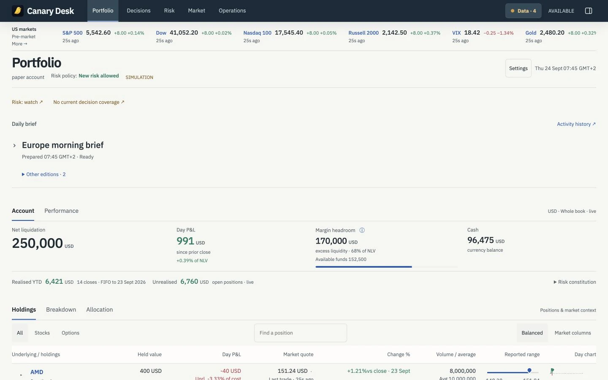
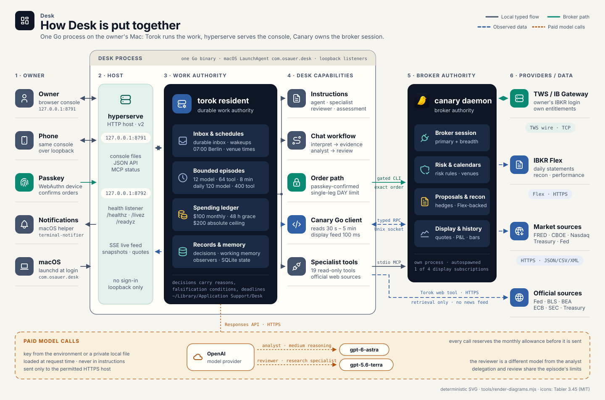
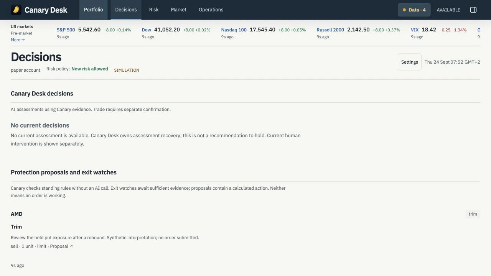
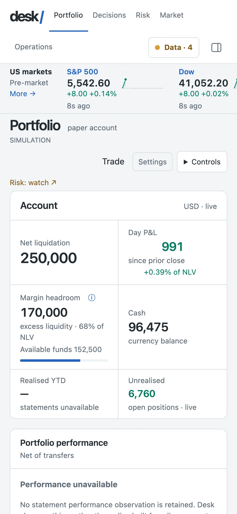
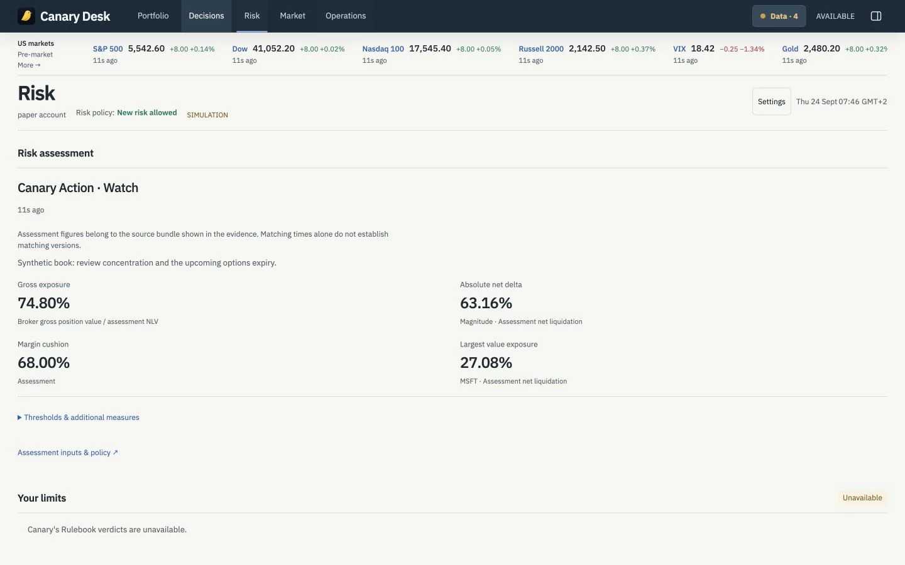
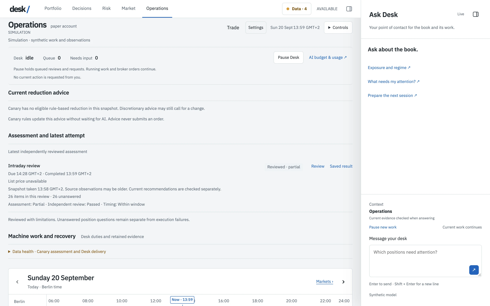

Automatic stop losses
Canary's protection rules place broker-side trailing stops, keep exit watches and hold hedges per position, with no AI in the loop. Desk shows each one on the holding line and under Risk.
Private · trading and risk management

Desk manages an Interactive Brokers book through the trading day: stop losses and hedges set by rule, a written brief before the open and after the close, AI-augmented research and decisions with dated evidence, and the portfolio numbers that matter, from exposure to time-weighted performance.

Rules first, then briefs, then AI where judgment is needed.
Canary's protection rules place broker-side trailing stops, keep exit watches and hold hedges per position, with no AI in the loop. Desk shows each one on the holding line and under Risk.
A written brief at 08:30 Berlin, half an hour before the US open and at 18:00: positions, risk, the calendar, what changed, what needs you.
Scheduled reviews at the open, before the close and after it. An analyst model proposes adds, holds, trims and exits with a reason, sources, what would prove it wrong and an expiry. A second model reviews before anything reaches you.
A durable conversation with the book: which positions need attention, exposure and regime, the next session. Evidence is gathered first. Missing evidence means no recommendation.
Exposure, margin and Greeks, sector and asset mix, reconciliation against statements, and time-weighted performance against SPY, net of transfers.
07:00 Berlin, an hour before each open, at the open, before the close, after it. Session times come from Canary, early closes included, so a holiday never runs a review.
Desk is mostly configuration. Canary owns the broker: session, prices, risk, calendars, stops and hedges, reconciliation. Torok, the agent harness, owns the work: inbox, schedules, bounded episodes, memory, recovery. HyperServe serves the console on loopback. Desk adds the instructions, nineteen read-only Canary tools, the observers and the shape of a decision. Models come from OpenAI. One analyses, another reviews and researches.

Five views, one masthead, one quote ribbon, Ask Desk on the right. Every figure carries its source and its age.




Desk stays private, but the ideas travel: rules before models, evidence contracts, a reviewer that is not the analyst. If you are building something like it, get in touch.